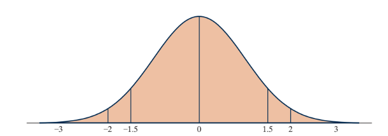

2-3 : Alternative measure of strength of evidence
MAT 2100: Introduction to Statistics
Grace College
Last updated September 24, 2024
The Jesus Creed
Hear, O Israel: The Lord our God, the Lord is one.
Love the Lord your God with all your heart and with all
your soul and with all your mind and with all your strength.
The second is this: Love your neighbor as yourself.
STEP 1: Ask a research question
We will gather data from your class to investigate the research question of whether students have a tendency to associate certain facial features with a name.
STEP 2: Design a study and collect data
Each student in your class will be shown the same two pictures of men’s faces used in the research study. You will be asked to assign the name Bob to one photo and the name Tim to the other. Each student will then submit the name that he or she assigned to the picture on the left. Then the name that the researchers identify with the face on the left will be revealed.
Exercise 1
Identify the observational units in this study.
Exercise 2
Identify the variable. Is the variable categorical or quantitative?
The parameter of interest here is the probability that a student in your class would assign the same name to the face on the left.
Exercise 3
State the null and alternative hypotheses to be tested when the data are collected. Express these both in words and symbols. (Hint: Think about the parameter and the research question of interest here.)
Figure 1:
Exercise 4
Do you think the face on the left is Bob or Tim?
STEP 4: Explore the data
Exercise 5
Collect the responses (data) for all the students in your class. How many students put Tim as the name on the left? How many students participated in this study (sample size)? What proportion put Tim’s name on the left?
When we conduct analyses with binary variables, we often call one of the outcomes a “success” and the other a “failure” and then focus the analysis on the “success” outcome. It is arbitrary which outcome is defined to be a success, but you need to make sure you do so consistently throughout the analysis. In this case we’ll call “Tim on left” a success because that’s what previous studies have found to be a popular choice.
STEP 4: Draw inferences
You will use the One Proportion applet to investigate how surprising the observed class statistic would be if students were just randomly selecting which name to put with which face.
Exercise 6
Before you use the applet, indicate what you will enter for the following values:
Exercise 6a:
Probability of success:
Exercise 6b:
Sample size:
Exercise 6c:
Number of repetitions:
Exercise 7
Conduct this simulation analysis. Make sure the Proportion of heads button is selected in the applet and not Number of heads.
Exercise 7a:
Indicate how to calculate the approximate p-value (count the number of simulated statistics that equal ____ or ____).
Exercise 7b:
Report the approximate p-value.
Exercise 7c:
Use the p-value to evaluate the strength of evidence provided by the sample data against the null hypothesis, in favor of the alternative that students really do tend to assign the name Tim (as the researchers predicted) to the face on the left.
The p-value is the most common way to evaluate strength of evidence against the null hypothesis, but now we will explore a common alternative way to evaluate strength of evidence. The goal of any measure of strength of evidence is to use a number to assess whether the observed statistic falls in the tail of the null distribution (and is therefore surprising when the null hypothesis is true) or among the typical values we see when the null hypothesis is true.
Exercise 8
Check the Summary Stats box in the applet.
Exercise 8a:
Report the mean (average) value of the simulated statistics.
Exercise 8b:
Explain why it makes sense that this mean is close to 0.50.
Exercise 8c:
Report the standard deviation (SD) of the simulated statistics.
Exercise 8d:
Report (again) the observed class value of the statistic. (What proportion of students in your class put Tim’s name on the left?) \(\hat p =\)
0.72
Exercise 8e:
Calculate how many standard deviations the observed class value of the statistic is from the hypothesized mean of the null distribution, 0.50. In other words, subtract the 0.50 from the observed value and then divide by the standard deviation. In still other words, calculate:
(0.72-0.496)/0.099 = 2.26
Your calculation in [REF=TODO] is called “standardizing the statistic.” It is telling us how far above the mean the observed statistic is in terms of the “how many standard deviations.”
Definition 2:
Definition ():
To standardize a statistic, compute the distance of the statistic from the (hypothesized) mean of the null distribution and divide by the standard deviation of the null distribution.
Once you calculate this value, you interpret it as “how many standard deviations the observed statistic falls from the hypothesized parameter value.”
The next question is how to evaluate strength of evidence against the null hypothesis based on a standardized value. Here are some guidelines:
Standardizing gives us a quick, informal way to evaluate the strength of evidence against the null hypothesis. For standardized statistics:
Table 3:
| between -1.5 and 1.5 | little or no evidence against the null hypothesis |
| below -1.5 or above 1.5 | moderate evidence against the null hypothesis |
| below -2 or above 2 | strong evidence against the null hypothesis |
| below -3 or above 3 | very strong evidence against the null hypothesis |
The diagram in the figure below illustrates the basis for using a standardized statistic to assess strength of evidence against the null hypothesis for a mound-shaped, symmetric distribution.
Figure 4:

The figure can be summarized by the following key idea.
Remark 5:
Key Idea .
Observations that fall more than 2 or 3 standard deviations from the mean can be considered in the tail of the distribution.
STEP 5: Formulate conclusions.
Exercise 9
Let’s examine the strength of evidence against the null.
Exercise 9a:
Based on the value of the standardized statistic, z, in [REF=TODO] and the guidelines shown above, how much evidence do the class data provide against the null hypothesis?
Exercise 9b:
How closely does your evaluation of strength of evidence based on the standardized statistic compare to the strength of evidence based on the p-value in [REF=TODO] ?
Now, let’s step back a bit further and think about the scope of inference. We have found that in most classes, the observed data provide strong evidence that students do better than random guessing which face is Tim’s and which is Bob’s. In that case, do you think that most students at your school would agree on which face is Tim’s? Do you think this means that most people can agree on which face belongs to Tim? Furthermore, does this mean that all people do ascribe to the same facial prototyping?
STEP 6: Look back and ahead.
Exercise 10
Based on the limitations of this study, suggest a new research question that you would investigate next.
Exploring Further
Exercise 11
In [REF=TODO] you recorded the proportion of students in your class who put Tim’s name with the photo on the left. Imagine that the proportion was actually larger than that (e.g., if your class was 60%, imagine it was 70%).
Exercise 11a:
How would this have affected the p-value?
Exercise 11b:
How would this have affected the absolute value of the standardized statistic?
Exercise 11c:
How would this have affected the strength of evidence against the null hypothesis?
Exercise 12
Suppose that less than half of the students in your class had put Tim’s name on the left, so your class result was in the opposite direction of the research conjecture and the alternative hypothesis.
Exercise 12a:
What can you say about the standardized value of the statistic in this case? Explain. (Hint: You cannot give a value for the standardized statistic, but you can say something specific about its value.)
Exercise 12b:
What can you say about the strength of evidence against the null hypothesis and in favor of the alternative hypothesis in this case?